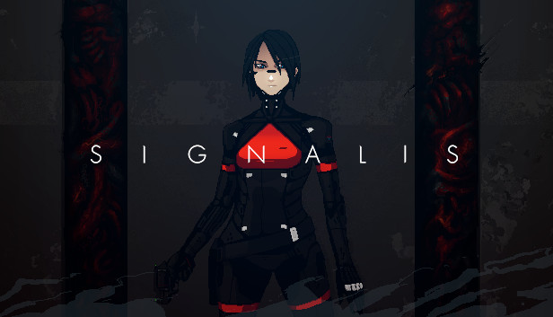

Dark Souls 3
Com as chamas a desvanecerem e o mundo em ruína, viaja até um universo com inimigos e cenários colossais. Os jogadores mergulharão num mundo de trevas com uma atmosfera épica através de uma jogabilidade mais rápida e um combate ainda mais intenso. Agora, apenas as cinzas restam... Prepara-te mais uma vez e abraça as trevas!
Ver mais
LEGO® Batman™: Legacy of the Dark Knight
Entre na aventura com Batman e proteja Gotham City em um jogo de ação e humor no clássico estilo LEGO. Enfrente vilões famosos, resolva puzzles e desbloqueie diversos personagens do universo DC enquanto explora cenários icônicos.
Ver mais
Devil may Cry 5
O melhor caçador de demônios está de volta com estilo, no jogo que os fãs de ação estavam esperando.
Um novo episódio na lendária série de ação, Devil May Cry 5 traz junto sua clássica mistura de ação turbinada com personagens originais de outro mundo e a mais nova tecnologia de jogos Capcom para trazer uma obra de arte de ação e aventura visualmente inovadora.

Forgive me father
Forgive Me Father é um jogo de tiro à moda antiga que se passa em um mundo com estilo de arte em quadrinhos e inspirado nos romances de Lovecraft. Como a única pessoa sã em um mundo consumido pela loucura, você será capaz de sobreviver até encontrar respostas e alívio?
Ver mais
Armored Core
Pilote seu próprio mecha em batalhas omnidirecionais de tirar o fôlego. Em Armored Core VI, você enfrentará missões desafiadoras e chefes colossais enquanto personaliza cada peça do seu robô para se adaptar a diferentes estilos de combate. Lute como um mercenário independente no planeta remoto Rubicon 3 e decida o destino de uma nova e misteriosa fonte de energia.
Ver mais
Signalis
Uma experiência clássica de survival horror com uma estética retro-tech única. Acorde de um sono criogênico como Elster, uma técnica Replika à procura de sua parceira perdida em uma instalação de mineração abandonada. Resolva quebra-cabeças complexos, gerencie recursos escassos e enfrente horrores cósmicos em uma jornada melancólica e surreal sobre identidade e memória.
Ver mais
The Witcher 3: Wild Hunt
Você é Geralt de Rívia, mercenário matador de monstros. Você está em um continente devastado pela guerra e infestado de monstros para você explorar à vontade. Sua tarefa é encontrar Ciri, a Criança da Profecia — uma arma viva que pode alterar a forma do mundo.
Ver mais
Sekiro shadows die twice
Torne-se o 'lobo de um braço só' e trilhe seu caminho de vingança no Japão da era Sengoku. Diferente de outros jogos da FromSoftware, Sekiro foca na precisão absoluta e no sistema de postura, onde o tinir das espadas define a vida ou a morte. Explore cenários verticais com seu gancho e enfrente guerreiros lendários para resgatar seu jovem mestre.
Ver mais
Total war three kingdoms
Domine a China antiga em um jogo que combina gestão de império em turnos com batalhas em tempo real de proporções épicas. Escolha entre heróis lendários e unifique uma nação dividida através de diplomacia astuta, economia sólida ou força bruta. O destino da dinastia Han está em suas mãos nesta obra-prima de estratégia histórica.
Ver mais